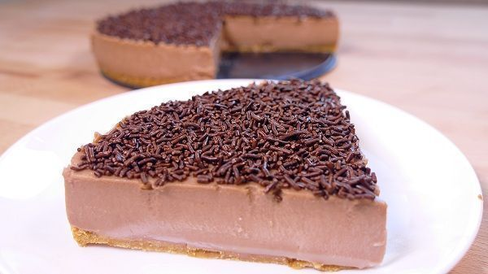

Ingredientes Para Molde de 20cm
100g de galletas maría
50g de mantequilla derretida
500ml de leche
250ml de nata para montar
300g de chocolate
100g de azúcar
6 hojas de gelatina neutra (o 15g de en polvo)
fideos, chocolatinas, sirope, para decorar…

100g de galletas maría
50g de mantequilla derretida
500ml de leche
250ml de nata para montar
300g de chocolate
100g de azúcar
6 hojas de gelatina neutra (o 15g de en polvo)
fideos, chocolatinas, sirope, para decorar…
1.- Ponemos las galletas en una batidora y trituramos bien. Si no tienes batidora puedes ponerlas en una bolsa y con un rodillo ir rompiéndolas.
2.- Añadimos la mantequilla derretida y con un tenedor mezclamos bien. Hasta que quede como una especie de arenilla húmeda.
3.- Untamos un molde desmontable para tartas con unas gotitas más de mantequilla derretida y con la ayuda de un papel lo extendemos por toda la superficie del molde. Encima colocamos la mezcla de galleta y mantequilla.
4.- Con un vaso o con un cuchara vamos extendiendo toda la galleta por toda la superficie del molde de tal modo que, no queden huecos libres. Especialmente por los bordes. Ésta, será la base de nuestra tarta y debe quedar bien compacta para poder sugetarla. Metemos en la nevera mientras realizamos los siguientes pasos.
5.- Preparamos el relleno de la tarta de chocolate en sí. En una cazuela alta ponemos la leche, la nata para montar, el azúcar y el chocolate que, puede ser con leche, negro o incluso blanco. El que prefieras. Calentamos a fuego suave mientras removemos con frecuencia. La idea es mezclar todos los ingredientes pero, que no llegue a hervir. Estos ingredientes se queman con mucha facilidad.
6.- Una vez estén todos derretidos añadimos la gelalina neutra previamente hidratada - si lo prefieres, también puedes emplear cuajada en polvo - y mezclamos bien hasta que quede bien integrada.
7.- Añadimos esta mezcla sobre la base de galletas que habíamos preparado antes. Ya estará más compacta del frío de la nevera. Dejamos reposar 10 minutos más y después volvemos a meter todo a la nevera. Dejamos mínimo 6 horas. Aunque es mejor que la dejes entre 10 y 24 horas. Cuanto más tiempo esté más asentada quedará la tarta y por tanto, más rica estará.
8.- Finalmente decoramos la superficie de la tarta de chocolate con lo que prefiramos. Con fideitos de chocolate, de colorines, con nata montada, con sirope de chocolate…. ¡Finalmente desmoldar y listo!
Dificultad: Baja
Preparación: 30 min
Nevera: 12 h
Tiempo Total: 12 h y 30 min aprox
Raciones: 4